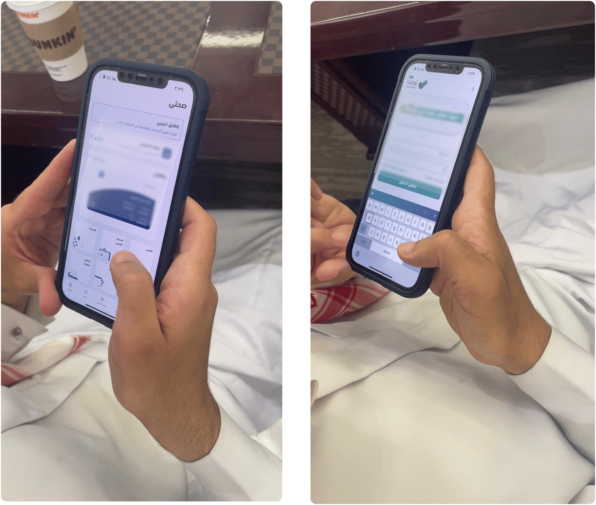

Case Study — Accessibility · UX Research
DGA Accessibility
Guidelines —
Saudi Arabia
I conducted accessibility assessments of Saudi Arabia's 3 most critical government platforms — Tawakkalna, Sehatty, and Absher — with 21 participants including people with vision disabilities and elderly citizens (75–90+ years). The work produced a comprehensive national accessibility guidelines document aligned with WCAG 2.2.
National Impact
Contributed to Saudi Arabia's #1 MENA ranking in e-government service maturity (ESCWA 2022/2023) · DGA Digital Inclusion Program
#3 globally in World Bank's Digital Government Maturity Index · 91.3% establishments using e-government (GASTAT 2023)
01 — The Problem
Government platforms were
not fully accessible
Saudi Vision 2030 aims to create a digitally inclusive society, with the National Transformation Program specifically targeting digital inclusion of all people with disabilities and elderly. Research found 1.4 million people with disabilities (4.2% of population) and 1.6 million elderly citizens (4.8%) — a combined 3 million people who needed accessible digital government services.
Despite Saudi Arabia's impressive digital achievements — 97.7% of establishments with internet access, 91.3% using e-government services — the DGA identified a critical gap: government platforms were not fully accessible. There were no unified national accessibility standards that design and development teams could reference, resulting in inconsistent and often inaccessible experiences across platforms.
02 — What We Tested
3 of Saudi Arabia's most
critical digital platforms
Platform 01
Tawakkalna
The national super app that combines all government services and information in one place — from essential services to important documents. Saudi Arabia's most-used government platform.
Platform 02
Sehatty
The national health platform established by the Ministry of Health. Aligns with the Kingdom's vision to improve access to care, quality of services, and health awareness within the community.
Platform 03
Absher
The official application of the Ministry of Interior's electronic platform, providing government services to citizens, residents, and visitors — from ID management to travel permissions.
03 — Research Methodology
How I tested
with real users
We conducted qualitative accessibility assessments against WCAG 2.1 success criteria at Levels A, AA, and AAA. The research combined in-person focus groups, assistive technology testing, task-based usability testing on live platforms, and WCAG gap analysis for each platform.
Session 01 — Vision Disabilities
13 participants
People with vision disabilities testing using their personal phones and screen readers. VoiceOver screen reader testing on iPhone devices. Tested main flows in each application to understand real-world barriers. Explored daily interaction patterns with government services.
Session 02 — Elderly (75–90+ years)
8 participants
Elderly participants testing using their personal phones. Focused on main flows in each application and daily tasks. Explored how seniors interact with government digital services and what barriers prevent independent use.
04 — Key Findings
What the research
revealed
The testing sessions exposed systematic accessibility barriers across all three platforms. One finding stood out: screen readers were misreading buttons as "images" — meaning visually impaired users couldn't identify what interactive elements did. This single finding shaped how we formulated the guidelines for semantic HTML and ARIA labelling.

Accessibility audit — annotated findings showing WCAG violations across all 3 government platforms

In-person research sessions — testing with people with vision disabilities and elderly participants (75–90+ years)
05 — The Output
National accessibility
guidelines document
The primary deliverable was a comprehensive accessibility guidelines document — a practical reference for both designers and developers. The document was aligned with the DGA Web Accessibility Framework (WCAG 2.2) and included entity-specific gap reports for each of the 3 platforms tested.
For Designers
WCAG 2.1 success criteria with practical examples
Simplified, actionable guidelines — colour contrast ratios, touch target sizes, focus state patterns, form design standards, error handling, and inclusive interaction patterns. Each criterion illustrated with real examples from the audit findings.
For Developers
Implementation techniques and assessment tools
ARIA landmark usage, keyboard navigation patterns, semantic HTML requirements, screen reader testing checklists, and an accessibility assessment tools matrix. Entity-specific gap reports for Tawakkalna, Sehatty, and Absher.

DGA National Accessibility Guidelines — designer and developer reference aligned with WCAG 2.2
06 — Impact
Supporting Saudi Arabia's
global digital leadership
The insights from the user testing sessions — particularly findings like screen readers misreading interactive elements — helped formulate practical guidelines that enable designers and developers to build more inclusive products. The work directly contributed to the DGA's national accessibility objectives.
Regional Rankings
#1 in MENA
The project supported Saudi Arabia's continued #1 ranking in the MENA region for e-government service maturity (ESCWA 2022/2023) and its advancement to #3 globally in the World Bank's Digital Government Maturity Index.
DGA Program
Digital Inclusion Program
The research contributed to the DGA's broader Digital Inclusion Program — which now includes usability and inclusivity testing services, the Accessibility Ease initiative, and the Digital Experience Maturity Index with a dedicated Digital Inclusion sub-index.
07 — Design Delivery
Full UX/UI redesign of
the DGA website
Beyond the guidelines document, I delivered a complete UX/UI redesign of the DGA's own website — applying every accessibility standard documented in the guidelines. The redesign served as the reference implementation, proving that the guidelines were not just theoretical but practically achievable on a real government platform.
The redesigned DGA website achieved WCAG compliance and demonstrated the full range of accessible patterns — proper semantic structure, keyboard navigation, screen reader compatibility, sufficient contrast ratios, accessible forms, and bilingual AR/EN support with correct RTL layout behaviour.

DGA Responsive Website — WCAG-compliant components across desktop and mobile
What I Redesigned
Full website experience
Homepage, service pages, navigation architecture, forms, search, and content pages — all rebuilt with accessible patterns. Semantic HTML structure, ARIA landmarks, skip navigation, focus management, and proper heading hierarchy throughout.
Why It Matters
Guidelines in practice
The DGA website redesign was proof that the accessibility guidelines work in production — not just in documentation. Other government teams could reference both the guidelines and the live DGA site as a working example of compliant implementation.
08 — Reflection
What I learned about
policy-level accessibility
This was the first time I understood that accessibility is a policy problem as much as a design problem. The violations I found weren't caused by teams who didn't care — they were caused by teams with no shared standard to work from. My job wasn't just to find issues. It was to create the standard that would prevent them from recurring across every ministry.
Watching a visually impaired participant try to navigate a government form with a screen reader — struggling with an unlabelled input field, confused by an error message that appeared in the wrong place — made abstract WCAG criteria viscerally real. It changed how I think about every interface I design. Those 13 participants taught me more about usability in two sessions than years of reading documentation.
The elderly session was equally important. A 85-year-old participant trying to access Absher on their phone revealed that accessibility isn't just about assistive technology — it's about cognitive load, text size, tap target size, and flow complexity. Designing for a screen reader user and designing for an elderly user require different strategies, but both start with the same principle: understand how they actually use the product, not how you assume they do.